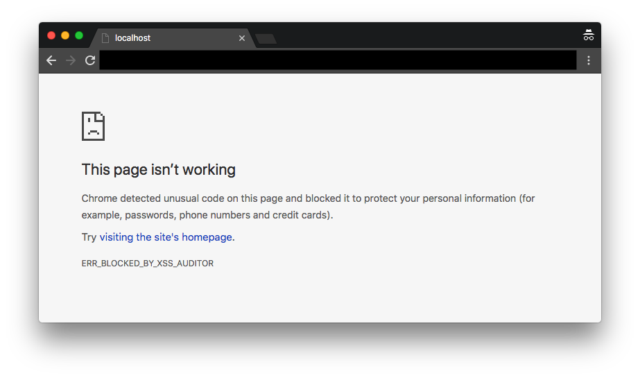
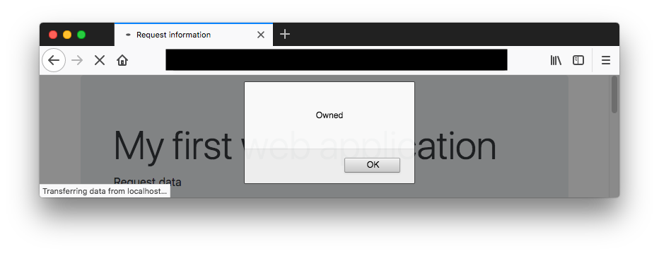

Cross-site Scripting (XSS) attacks are code injection attacks where data is injected into the web application in such a way it is executed on the victim's machine. The malicious content is frequently JavaScript, but is certainly not limited to it. Any content, e.g., Flash, that is executed on the victim's machine can be used. In this attack, however, we will focus on JavaScript injection.
XSS attacks are powerful attacks that can be used steal private information (later!), direct the victim to an attacker-controlled site (containing further attacks!) or perform other action while masquerading as the benign page. The potential is almost limitless - after all executable code is injected,
A reflected XSS attack is a particular form of XSS attack relying on the server reflecting (parts of) a request back to the uses without filtering or escaping. This may allow an attacker to create a malicious URL that causes script execution when clicked. Such a URL can then be distributed to the victim via email, a chat client or some in some other way.
If you have implemented the web application of My first web
application
according to specification it should be vulnerable to a reflected XSS attack, since it reflects information
about request back to the user without filtering or escaping. Your first task is to try to craft a URL
that opens an alert window by injecting
<script>alert('Owned');</script>.
This attack is not possible to mount in some browsers, e.g., Chrome. An attack attempt in Chrome gives the following result (URL masked to hide attack details).
Firefox 60 does not seem to include XSS protection. Mounting the attack in Firefox yields the following result (URL masked to hide attack details).
Try using different browsers until you are able to mount the attack. If you fail to craft a working attack don't hesitate to contact me for hints!
The attack is made possible since the application allows unescaped untrusted data into an HTML element. Your second task is to implement protection against reflected XSS in the application. Follow the OWASP cheat sheet on XSS prevention, in particular rule #1 and rule #2.
Write a short attack report detailing the attack and your countermeasures.